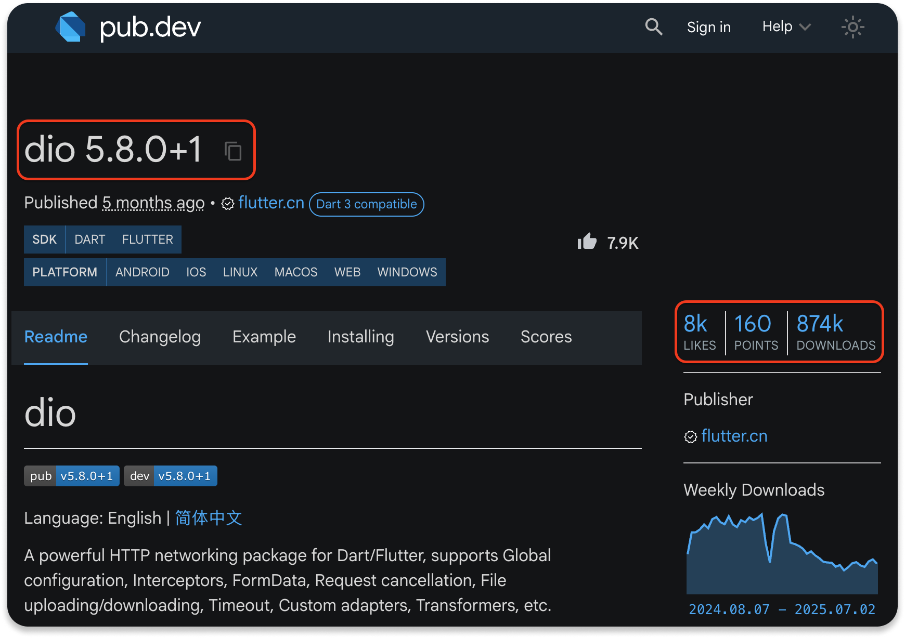

HTTP CRUD (Пакет Dio)
Dio — это мощный HTTP-клиент для Dart, который поддерживает перехватчики (interceptors), глобальную конфигурацию, работу с FormData, обработку ошибок, таймауты и многое другое. Он делает сетевой код еще более чистым и управляемым.
1. Установка
Добавим в файл pubspec.yaml:
pubspec.yaml


dependencies:
dio: ^5.8.0+1Или установить через консоль командой
flutter pub add dio
2. Преимущества Dio
- Инициализация
Dio: Мы создаем один экземплярDioи настраиваем его с базовым URL (baseUrl). Это избавляет от необходимости прописыватьhttps://dummyjson.comв каждом запросе. - Отправка данных:
Dioавтоматически преобразуетMapвJSONи добавляет нужный заголовок ('Content-Type': 'application/json'), поэтому код становится короче. - Получение данных:
Dioавтоматически декодируетJSON-ответы. ВместоjsonDecode(response.body)мы просто используемresponse.data. - Обработка ошибок:
Dioпо умолчанию выбрасывает исключениеDioExceptionдля неуспешных статус-кодов (не 2xx). Это позволяет отлавливать все ошибки сети в одном блокеcatch, делая код более надежным.
3. TodoService с Dio
Файл services/todo_service.dart
Dart
import 'package:dio/dio.dart';
import '../models/todo.dart';
class TodoService {
/// Экземпляр Dio с базовой конфигурацией.
final Dio _dio;
TodoService() : _dio = Dio(BaseOptions(
baseUrl: 'https://dummyjson.com',
connectTimeout: Duration(seconds: 5), // Таймаут на подключение
receiveTimeout: Duration(seconds: 5), // Таймаут на получение ответа
));
/// GET: получить СПИСОК всех задач
Future getTodoById(int id) async {
try {
final response = await _dio.get('/todos/$id');
// Dio автоматически декодирует JSON, можно сразу работать с response.data
return Todo.fromJson(response.data);
} on DioException catch (e) {
print('Ошибка при получении списка задач: $e');
return null; // Возвращаем пустой список в случае ошибки
}
}
/// POST: добавить новую задачу
Future addTodo({required String todoText, required int userId}) async {
try {
final response = await _dio.post(
'/todos/add',
// Dio автоматически преобразует Map в JSON
data: {
'todo': todoText,
'completed': false,
'userId': userId,
},
);
return Todo.fromJson(response.data);
} on DioException catch (e) {
print('Ошибка при добавлении задачи: $e');
return null;
}
}
/// PUT: обновление задачи
Future updateTodo({required int todoId, required bool isCompleted}) async {
try {
final response = await _dio.put(
'/todos/$todoId',
data: {'completed': isCompleted},
);
return Todo.fromJson(response.data);
} on DioException catch (e) {
print('Ошибка при обновлении задачи: $e');
return null;
}
}
/// DELETE: удаление задачи
Future deleteTodo(int todoId) async {
try {
final response = await _dio.delete('/todos/$todoId');
return Todo.fromJson(response.data);
} on DioException catch (e) {
print('Ошибка при удалении задачи: $e');
return null;
}
}
} 4. Модель Todo
Файл models/todo.dart
Dart
class Todo {
final int id;
final String todo;
final bool completed;
final int userId;
Todo({
required this.id,
required this.todo,
required this.completed,
required this.userId,
});
// Фабричный конструктор: создает экземпляр Todo из JSON (Map)
// Это нужно для десериализации ответа от сервера.
factory Todo.fromJson(Map json) {
return Todo(
id: json['id'],
todo: json['todo'],
completed: json['completed'],
userId: json['userId'],
);
}
// Метод для преобразования объекта Todo обратно в JSON (Map)
// Это нужно для сериализации данных при отправке на сервер (POST, PUT).
Map toJson() {
return {
'todo': todo,
'completed': completed,
'userId': userId,
};
}
// Переопределяем toString для удобного вывода в консоль
@override
String toString() {
return '\n\tid: $id,\n\ttodo: "$todo",\n\tcompleted: $completed,\n\tuserId: $userId';
}
} 5. Использование в main.dart
Файл main.dart
Dart
Future main() async {
// Создаем экземпляр сервиса
final todoService = TodoService();
// Объект, который хранит данные полученные через сервис запросов
final todo = await todoService.getTodoById(2);
print("id : ${todo?.id}"); // Обращаемся к обычным свойствам объекта
print("Задача : ${todo?.todo}");
print("Завершена : ${todo?.completed}");
} Вывод
id : 2
Задача : Memorize a poem
Завершена : true